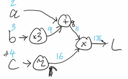
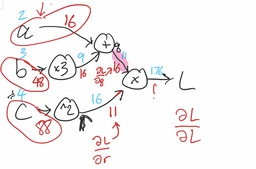

Neural networks and backpropagation#
Neural nets are a very powerful class of methods that have become popular in fields like computer vision and natural language processing, where coming up with good features can be challenging.
While there’s a rich mathematical foundation underlying neural nets, in this class we’ll focus on one of the big computational ideas that’s at the heart of most neural net implementations: backpropagation and automatic differentiation. While these ideas were initially conceived for neural nets, they’re now used in many other ways too: libraries like PyMC use automatic differentiation to do efficient Bayesian inference; and much more.
In general, automatic differentiation and backpropagation are useful for any problem where the solution involves computing gradients!
A feed-forward neural network#
As we’ve already seen, linear regression is a simple but powerful model: to predict a value \(y\) from a vector of features \(x = (x_1, \ldots, x_k)\), linear regression uses the following:
Here, \(W\) is a vector of coefficients, sometimes also called weights, and \(b\) is a scalar that we call the intercept or bias. As we saw in the previous section, linear models can fail when the relationship between \(x\) and \(y\) is nonlinear. We also saw that if we want to model complex, nonlinear interactions while still using linear models, we need to define more complex features.
Motivated by this, what if we tried using another layer of linear regression that could compute features for us? It might look something like this:
Here, \(W_1\) is now an \(m \times k\) matrix of weights, and the result of the matrix-vector multiplication and addition \(W_1x + b_1\) is an \(m\)-dimensional vector of features. We then apply linear regression with those features, using the weights in the vector \(W_2\) and intercept/bias in the scalar \(b_2\), to obtain \(y\).
Unfortunately, this doesn’t work because it reduces to a single layer of linear regression. Applying a bit of algebra, we can simplify the above equation to \(y = \big(W_2W_1\big)x + \big(W_2b_1 + b_2\big)\), which is just linear regression written in an unnecessarily complicated way.
In order to prevent the simplification to linear regression, we could apply a nonlinear function \(f\) as part of computing the features:
This is now the simplest possible neural network, which we call a feed-forward or fully connected network with one hidden layer (the so-called “hidden layer” is the result of the computation \(f(W_1 x + b_1)\)).
The nonlinear function \(f\) can be anything from a sigmoid or logistic function to the ReLU (restricted linear unit) function, \(f(z) = \max(0, z)\).
In order to fit a linear regression model, we had to estimate good coefficients. In probabilistic terms, we did this using In order to fit a neural network, we have to estimate good weights \(W_1, W_2, \ldots\) and biases \(b_1, b_2, ldots\).
To make our notation a little simpler, we’ll use \(\theta\) to denote all our parameters: \(\theta = (W_1, W_2, b_1, b_2)\). In order to find the best values of \(\theta\), we’ll define a loss function \(\ell(\theta, y)\) and then use stochastic gradient descent to minimize it.
Empirical risk minimization#
We start by choosing a loss function. In general, the choice of loss function depends on the problem we’re solving, but two common choices are the squared error loss (also known as \(\ell_2\) loss) and the binary cross-entropy loss (BCE). Let’s consider the \(\ell_2\) loss:
We’ll minimize the average loss:
Here, we’re averaging over the empirical distribution of the data in our training set, which makes this a frequentist risk. The process of minimizing this loss is often referred to as empirical risk minimization.
Review: Stochastic gradient descent#
For more on stochastic gradient descent, you may find it helpful to review Chapter of the Data 100 textbook.
(Stochastic) gradient descent is a powerful tool that lets us find the minimum of any function, as long as we can compute its gradient. Recall that a gradient is a vector of partial derivatives with respect to each parameter. In the example above, our gradient would be
Gradient descent is an optimization procedure where we start with an initial estimate for our parameters, \(\theta^{(0)}\). We then repeatedly apply the following update to get \(\theta^{(1)}, \theta^{(2)}, \ldots\):
Here, \(\alpha\) is a learning rate (typically a small positive number, also sometimes called a step size), and \(y\) is the data we observed. In stochastic gradient descent, instead of computing the gradient using all of our data, we divide our data into batches, and at each iteration, compute the gradient on one batch in sequence.
This means that we must compute the gradient at every single iteration. So, anything we can do to compute gradients faster and more efficiently will make our entire optimization process faster and more efficient.
Gradients and Backpropagation#
Backpropagation is an algorithm for efficiently computing gradients by applying the chain rule in an order designed to avoid redundant computation. To see how it works, we’ll consider a very simple loss function of three variables. We’ll compute the gradient manually using the chain rule, and then we’ll see how backpropagation can do the same computation more efficiently.
Computing gradients with the chain rule#
Consider a very simple loss function involving three variables, \(a\), \(b\), and \(c\):
We can compute the partial derivatives with respect to \(a\), \(b\), and \(c\). To make it a little clearer when and where we’re using the chain rule, let \(q = a+3b\) and \(r = c^2\), so that \(L = qr\). The partial derivatives are:
Even in this simple example, we can see that there was some redundant work involved: in doing this computation, we needed to compute \(\frac{\partial L}{\partial q} = c^2\) twice. In a more complicated expression, especially one with many nested function calls, the redundant work would become much worse. Backpropagation gives us a way to compute these gradients more efficiently.
Backpropagation: an example#
Instead of representing the computation as an algebraic expression, let’s express it as a computation graph. This is a visual representation of the mathematical expression:

Given specific numerical values for \(a\), \(b\), and \(c\), backpropagation is an efficient way to compute the loss and the gradient (i.e., all the partial derivatives), with no redundant computation.
We start by computing the loss itself. This involves just doing the computations specified by the graph, denoted by the blue numbers above the arrows:

Next, let’s notice that when we did the calculations in the previous section to find the gradient, most of our expressions started at the loss, then, using the chain rule, computed partial derivatives with respect to things like \(q\) and \(r\). Let’s try to write these partial derivatives on the graph, and see if we can use them to keep working backwards.
First, we’ll start with the easiest derivative, the derivative of the loss with respect to itself: \(\frac{\partial L}{\partial L}\). This is just 1!
Next, we’ll compute the derivative of the loss with respect to \(q\) (top right branch of the graph). How did we get from \(q\) to \(L\)? We multiplied by 16 (that is, for these specific numbers, \(L = 16q\)). So, the partial derivative of \(L\) with respect to \(q\) is just 16.
Continuing along the top part of the graph, now we can compute the derivative with respect to \(a\). How did we get from \(a\) to \(q\)? We added 9 (that is, for these specific numbers, \(q = a + 9\)). So, the partial derivative of \(q\) with respect to \(a\) is just 1. But we’re trying to compute \(\frac{\partial L}{\partial a}\), not \(\frac{\partial q}{\partial a}\). So, we’ll take advantage of the chain rule and multiply by the “derivative so far”: that’s just \(\frac{\partial L}{\partial q}\) = 16. So, our answer is \(\frac{\partial L}{\partial a} = 1 \cdot 16 = 16\).
Next, we’ll look at the \(b\) branch of the graph. From similar reasoning to above, the derivative at the output of the “multiply by three” block is just 16. How do we use that to compute the derivative with respect to \(b\)? To get from \(b\) to that value, we multiplied by 3. So, the corresponding term in the chain rule is 3. We multiply that with what we have so far, 16, to get 48.
Finally, let’s look at the \(c\) branch at the bottom of the graph. We’ll start by computing the derivative with respect to \(r\). Similar to step 2 above, we multiplied \(r\) by 11 to get \(L\), so that means that the derivative is 11.
All we have left is to go through the “square” block. The derivative of its output with respect to its input is two times the input (in other words, \(\frac{\partial r}{\partial c} = 2c\)). Since the input was 4, that means our new term is 8, and our overall derivative on this branch is \(11 \cdot 8 = 88\).
Now we’re done! We’ve computed the derivatives, as shown in this completed graph with the backpropagation intermediate and final results in red below the arrows:

Backpropagation#
In general, all we need to successfully run backpropagation is the ability to differentiate every mathematical building block of our loss (don’t forget, the loss depends on the prediction). For every building block, we need to know how to compute the forward pass (the mathematical operation, like addition, multiplication, squaring, etc.) and the backward pass (multiplying by the derivative).
(Optional) Backpropagation in pytorch#
Let’s see what this looks like in code using pytorch. We start by defining tensors for a, b, and c: tensors are the basic datatype of pytorch, much like arrays in numpy.
import torch
# Torch tensors are like numpy arrays
a = torch.tensor(2., requires_grad=True)
b = torch.tensor(3., requires_grad=True)
c = torch.tensor(4., requires_grad=True)
We then define tensors for q and r. Note that each one contains both the value computed as well as the necessary operation to compute the gradient in the backward pass:
q = a + 3 * b
r = c ** 2
print(q, r)
tensor(11., grad_fn=<AddBackward0>) tensor(16., grad_fn=<PowBackward0>)
Finally, we define our loss:
L = q * r
L
tensor(176., grad_fn=<MulBackward0>)
Now that we’ve computed the loss, we can have PyTorch run backpropagation and compute all the derivatives with the .backward() method:
L.backward()
Let’s look at the gradient for each input:
print(a.grad, b.grad, c.grad)
tensor(16.) tensor(48.) tensor(88.)
We can see that the results match up precisely with what we computed above manually!